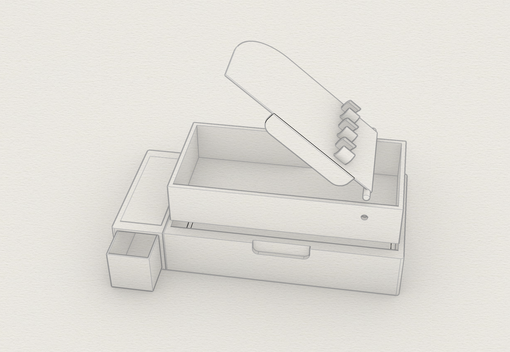
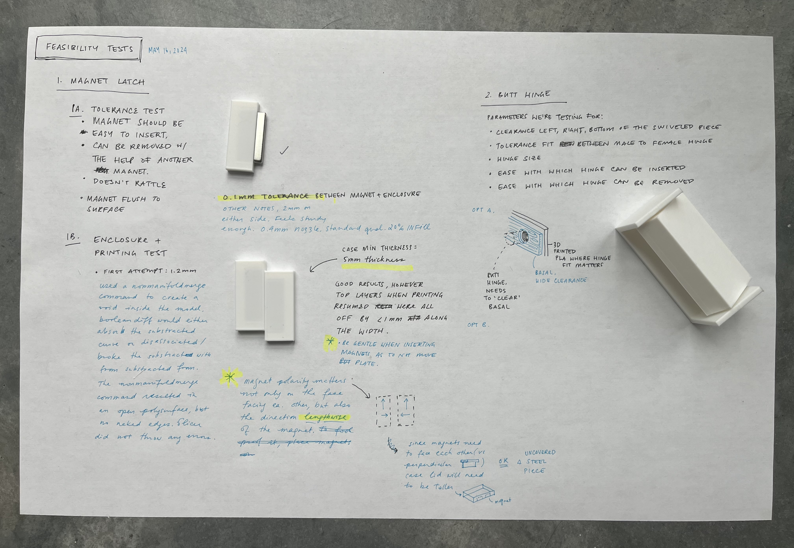
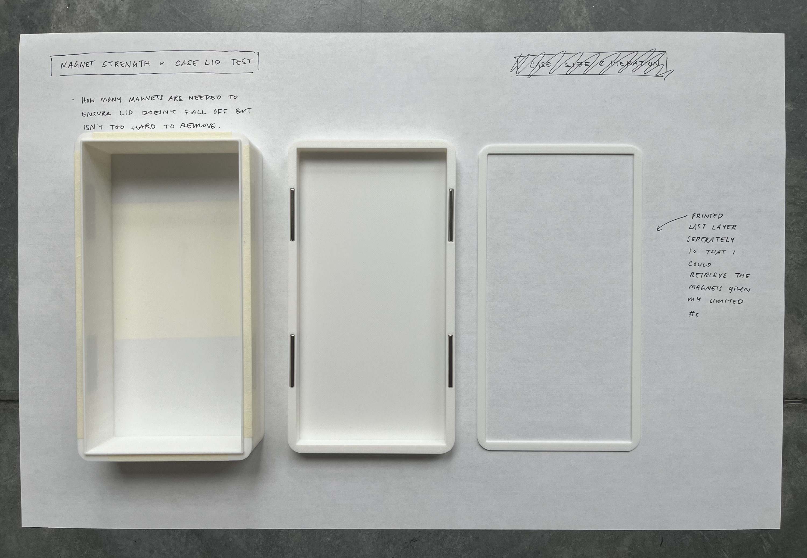
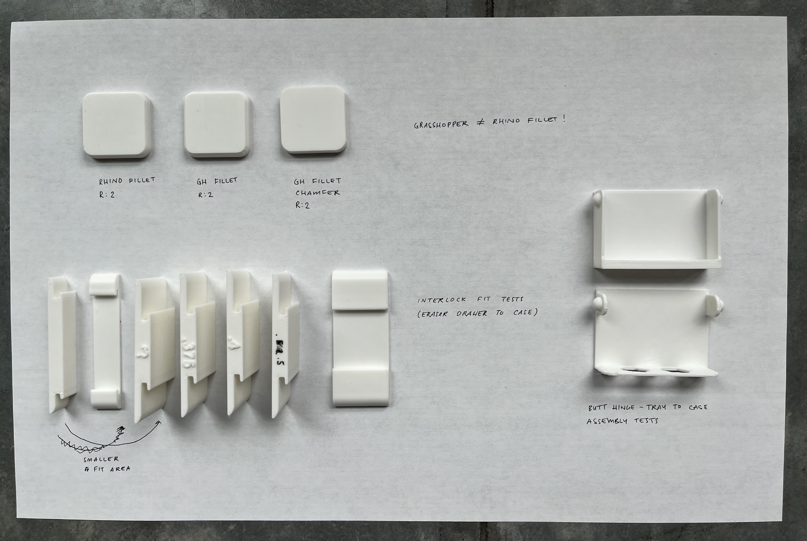
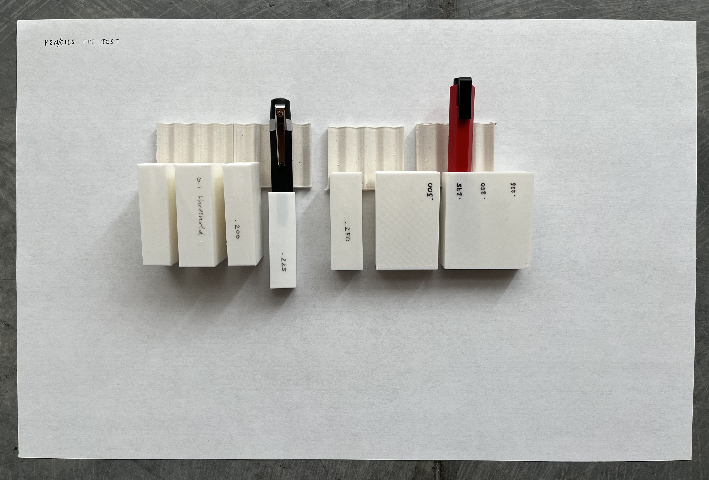
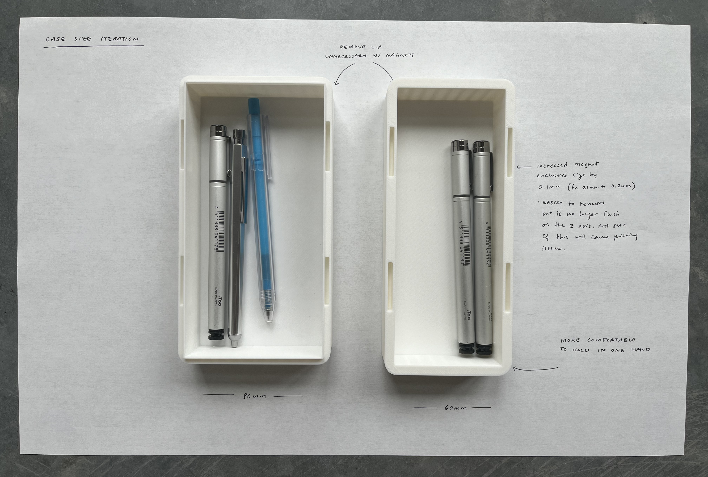
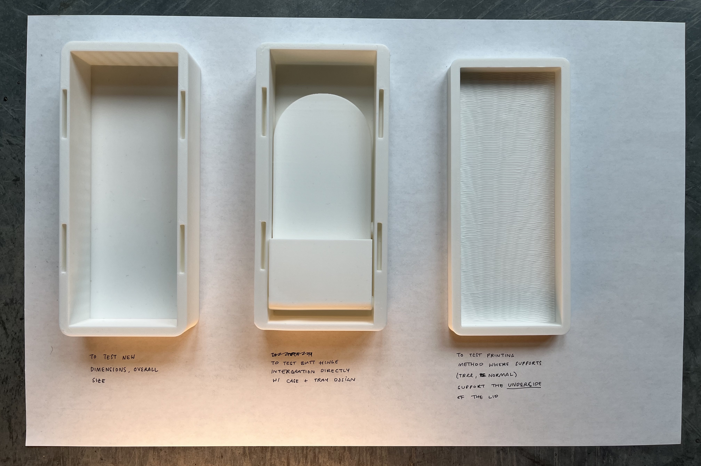
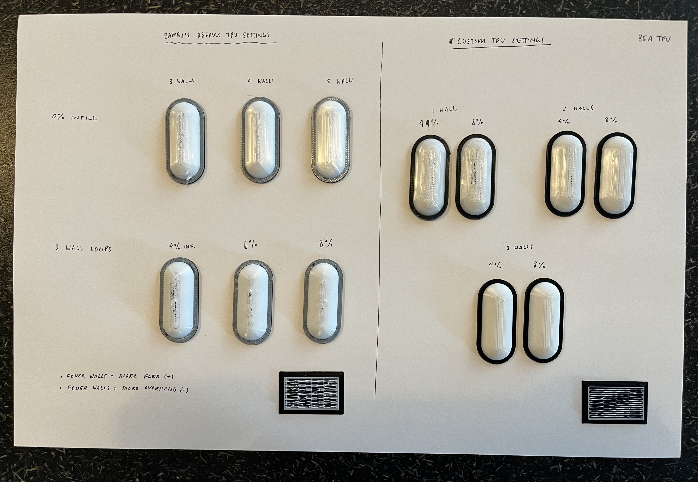
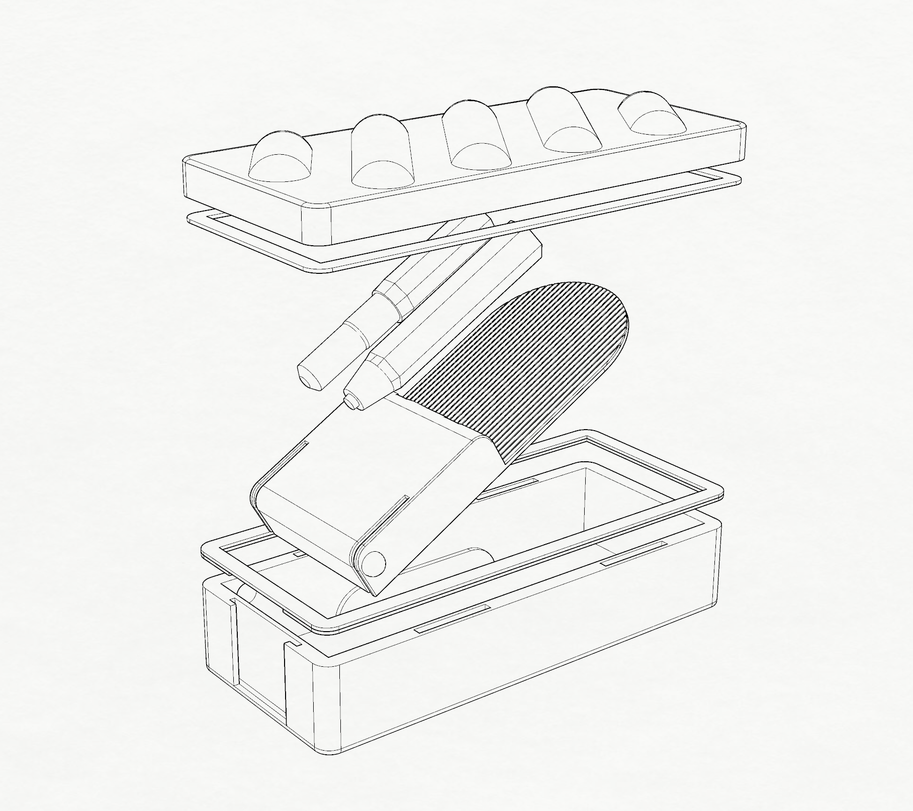
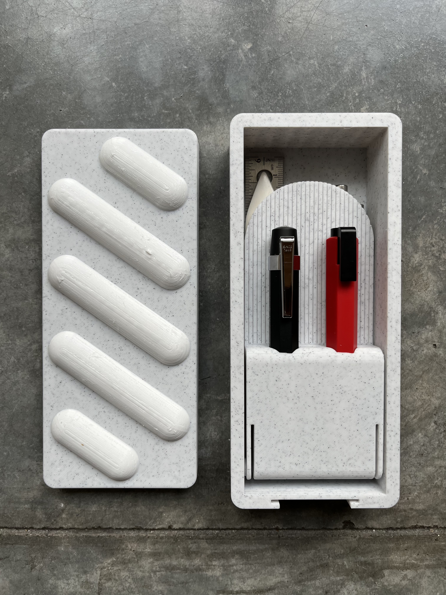

Inspiration and concept
Growing up, I would see these intricate stationary cases. They were very gadget-y and themed. For example, you could push a button and it would pop up the sharpener. Another characteristic of these boxes were the number and variety of compartments within them. I want to do a contemporary adult version of this for my favorite stationary tools, some of which I've had for over a decade.


Rough concept sketch
{kind=link}
Planning
Tasks and schedule
- Modeling with parametic modelling for tolerance fits and known fallback options - By 05/19
- Small scale feasibility tests - By 05/19
- Hidden magnet latch
- Butt hinge
- 3D printed texture tests
- Select pen and pencil "snap" holders
- A "soft" texture to the lid's exterior as homage to the bubbly plastic covers from the vintage cases
- Balsa wood laser cuts and box joint tests (05/22)
- Timebox: Hinge pin (ETA depending on when material can be sourced)
- Timebox: Spring mechanism for eraser drawer (ETA depending on when material can be sourced)
- Assemble first iteration by 05/24
- If hidden hinge for the lid doesn't work, fallback to a basic, removable lid, can still use magnets to latch
- Adjustments and finishes by 05/26
- Nice to have: Eraser drawer with a spring mechanism
Bill of materials
- Filament color A (ETA 05/20)
- Filament color B (ready)
- Tiny rare earth magnets (ready to order 05/15)
- Balsa sheets (ready to order 05/15)
- Dowel hinge pin or bolts - Need advice
- Compression spring (ready to order 05/15)
Resources
- https://vwallen.github.io/hcde598-s2020/assignment-08-final-project.html
- https://www.mcmaster.com/products/shims/hollow-female-threaded-rods/
- https://www.mcmaster.com/products/friction-hinges/
- https://www.mcmaster.com/products/threaded-posts/18-8-stainless-steel-binding-barrels/
Feasibility and fit tests
Magnet and butt hinge tests
{kind=link}
Number of magnets and placement test
{kind=link}
TPU 95A filament and folding tray tests
TPU 95A has the flexibility of a tire but after doing a few print tests, I found it too stiff for the plushy texture I was going for.
Fillets, eraser drawer to case fit, and butt hinge fits
The fit for the fillets and butt hinges needed to both be held in place and able to taken out easily.
{kind=link}
Pen and pencil fit
I soon learnt it was more efficient to print a range of threshold fits vs one-at-a-time. I wanted the pen and pencil to be able to fit in easily but still be held in place without them falling out.
{kind=link}
Left, final fit test for connecting the eraser drawer to the main case. Right, pen and pencil fit and removal.
Iterations
When switched to the smaller, easier to hold size, I abandoned the balsa or basswood insert to save space.
{kind=link}
{kind=link}
Printing and assembly tests
Butt hinge to case and printing supports tests
{kind=link}
85A TPU printing tests
{kind=link}
Lid underside support and lid design tests
{kind=link}
{kind=link}
Results
Most recent iteration
{kind=link}
The case fits a Kaweco Sport pen and Worther pencil in a removable swing tray. Below it, more stationary can be stowed underneath. The base, lid, and placements for the magnets were designed with parametric definitions in Grasshopper so various sized boxes can be easily printed.
{kind=link}
Retrospective
Things I tried for the first time
- Filament: TPU 95A
- Filament: TPU 85A
- Butt hinges
- Printing TPU on PETG
- Printing enclosed voids
- Magnets
Things I learnt
- Fillets will output differently in Grasshopper than in Rhino
- You can either use Rhino's nonmanifoldmerge function or export multiple STLs into a single STL to print a model with enclosed voids
- TPU is very difficult to remove from the print bed
- Am reminded again how difficult it is to print PETG with PETG supports
- A portion of printing time is dedicated to warming the bed and other prep so it's worthwhile to print a range of threshold tests in one go vs one-at-a-time
- Translucent TPU looks great when thin but cheap-ish when it's a bigger piece
- If magnets aren't fitting snuggly then the nozzle will lift them up while printing, causing an uneven print across the magnet
Things I'd try in the "next" iteration
- Adding registers between the lid and base or switching the design to use a magnet catch and strike plate
- Priting PETG on PLA supports on multi-filament enabled printer
- Eraser drawer with latch and spring coil